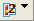
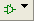
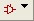

Connection Icon in Calibre RVE
To access: Click the Connection Icon in the lower right corner of Calibre RVE
The Connection icon displays the connection status and includes a dropdown menu to connect, disconnect, and open the Options tab.
Description
The Connection icon image reflects the connection status:
Icon Image |
Description |
|---|---|
Calibre RVE was started from the command line, and no design tool connection or highlight has been attempted. |
|
|
One layout connection, or layout and schematic with same socket. |
 |
Two connected layout design tools. |
 |
A connected schematic tool. |
All layout design tools are disconnected or a connection attempt failed. |
|
 |
The schematic tool is disconnected or the connection attempt failed. |
No icon |
No viewer is configured; the corresponding checkbox on the Options tab, Design Tools category is not checked. |
The dropdown menu selections are described in the following table.
Objects
Menu Selection |
Description |
|---|---|
Disconnect <design tool on host:socket> |
Connects or disconnects the design tool. The design tool information is not displayed for the schematic connection. The menu item that is displayed depends on the current state of the connection. |
|
Opens the Options tab to the Design Tools category. |
Synopsys Laker, unlike other layout tools, does not report the viewer name to back to Calibre RVE, so the most recently connected viewer or the default viewer is displayed as the design tool. As a workaround, you can set the environment variable MGC_CALIBRE_LAYOUT_SERVER_NAME to “Synopsys:Laker”.
Usage Notes
An automatic connection to a viewer is attempted if you start Calibre RVE without connection to a viewer (standalone mode) then later attempt to highlight a result. However, this automatic connection attempt is not made if you explicitly disconnect from a viewer using Disconnect in the Connection Icon dropdown menu.